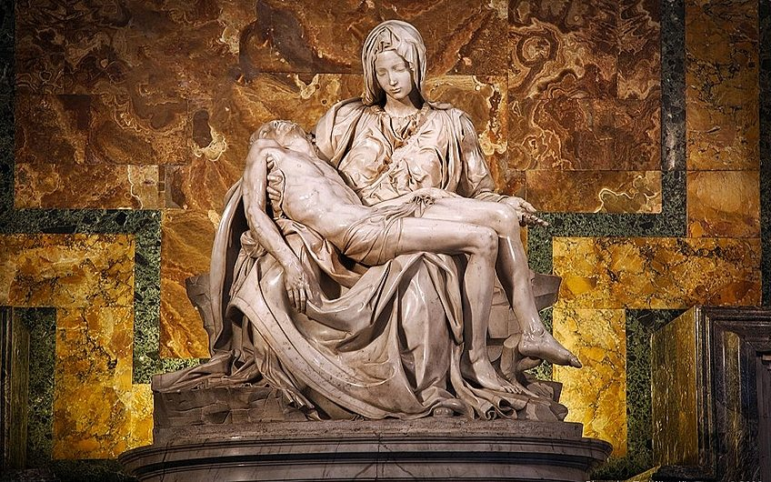
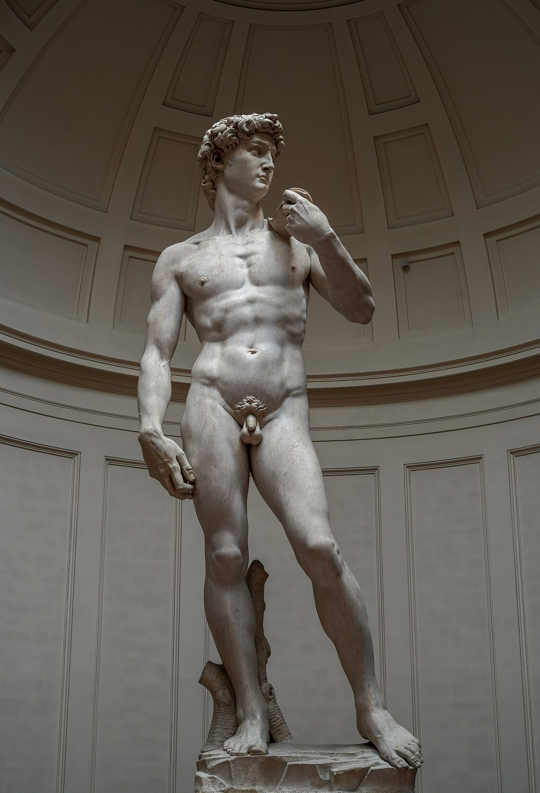
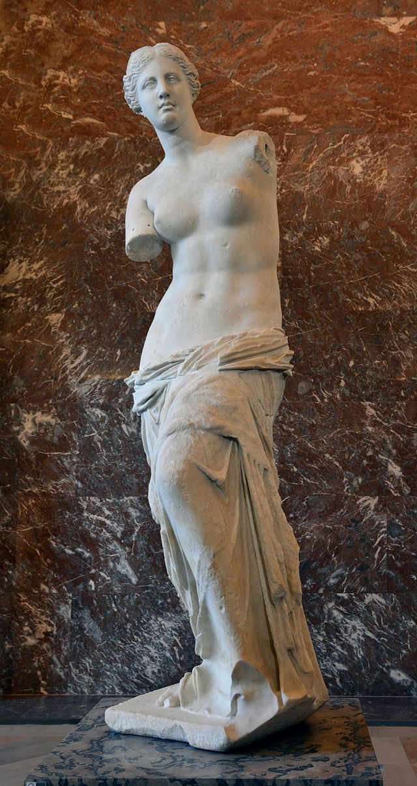
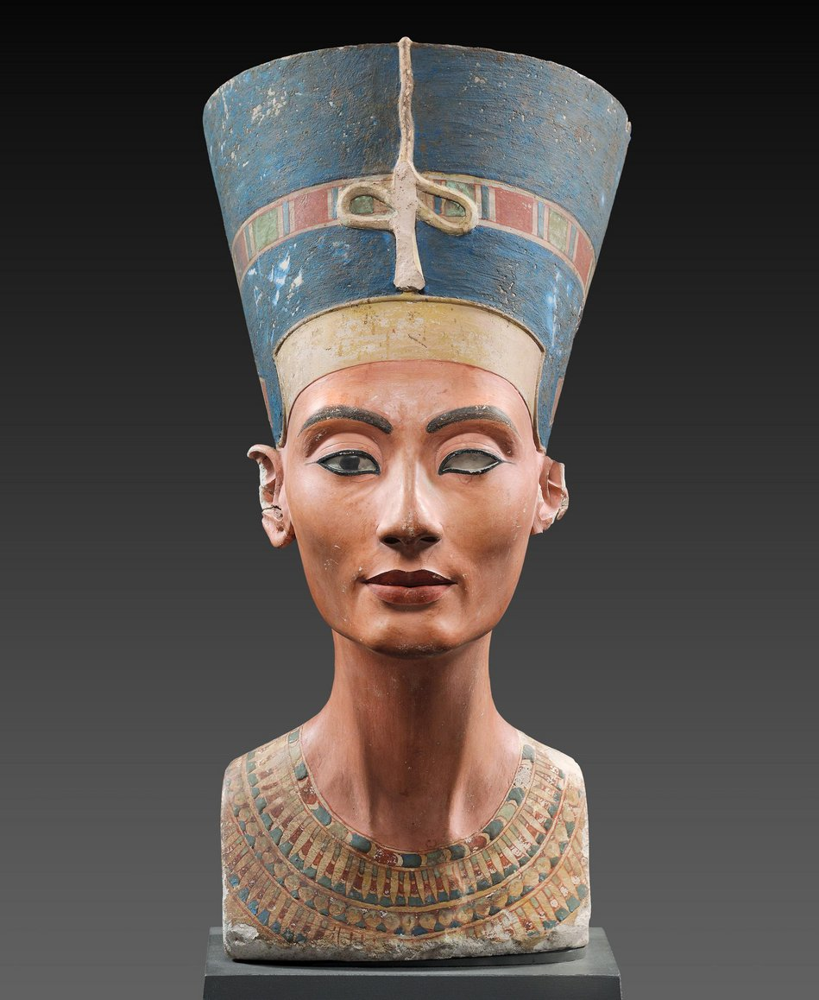

Unveiling the Serenity of Sculptures

The Thinker | Auguste Rodin
"The Thinker" is a renowned sculpture by Auguste Rodin, depicting a seated male figure lost in contemplation. With his chin resting on his right hand and a powerful physique, the sculpture represents the intensity and effort involved in the act of thinking. Originally part of "The Gates of Hell" project, it has become an iconic symbol of intellectual inquiry and the universal human struggle for understanding.

Pieta | Michelangelo
"Pieta" is a famous sculpture created by the Italian artist Michelangelo. Completed in 1499, it depicts the body of Jesus Christ lying on the lap of his mother, Mary, after the Crucifixion. The sculpture showcases Michelangelo's exceptional skill in capturing the delicate emotions of grief and compassion, with Mary's serene expression contrasting with the lifeless body of Jesus. "Pieta" is considered a masterpiece of Renaissance sculpture and is housed in St. Peter's Basilica in Vatican City.

David | Michelangelo
"David" is a renowned marble sculpture created by the Italian artist Michelangelo between 1501 and 1504. It depicts the biblical hero David, standing confidently with a slingshot over his shoulder, moments before his battle with the giant Goliath. The sculpture's impressive size, detailed anatomy, and exquisite craftsmanship exemplify Michelangelo's mastery of capturing the human form and his ability to convey strength, beauty, and timeless heroism.

Venus De Milo
The Venus de Milo, also known as Aphrodite of Milos, is an ancient Greek marble sculpture created between 130 and 100 BCE. The statue depicts the goddess Aphrodite, the Greek goddess of love and beauty. The Venus de Milo is renowned for its elegant and timeless beauty, with its missing arms adding to its mystique and emphasizing the grace and allure of the female form.

Bust of Nefertiti
The Bust of Nefertiti is an iconic ancient Egyptian sculpture created during the 14th century BCE by the sculptor Thutmose. It is a lifelike portrayal of Queen Nefertiti, the wife of Pharaoh Akhenaten. The bust is celebrated for its exquisite craftsmanship, balanced proportions, and the serene and regal beauty of Nefertiti, making it one of the most treasured artifacts from ancient Egypt.

Discobolus
"The Discus Thrower," also known as "Discobolus," is a famous ancient Greek sculpture created by the sculptor Myron around 450 BCE. The sculpture portrays a muscular athlete in mid-action, captured in the moment of releasing a discus. It exemplifies the idealized human form, showcasing the balance, harmony, and dynamic movement associated with ancient Greek art.

Laocoön and His Sons
"Laocoön and His Sons" is a renowned ancient Greek sculpture dating back to the 1st century BCE. It depicts the mythological figure Laocoön and his two sons being attacked by sea serpents. The sculpture is celebrated for its dramatic composition, intricate details, and emotional intensity, capturing the anguish and struggle of the figures in a powerful and realistic manner. It is considered a masterpiece of Hellenistic sculpture, showcasing the skill of the ancient Greek artists in conveying narrative and human expression through stone.